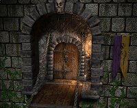
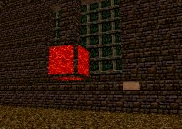
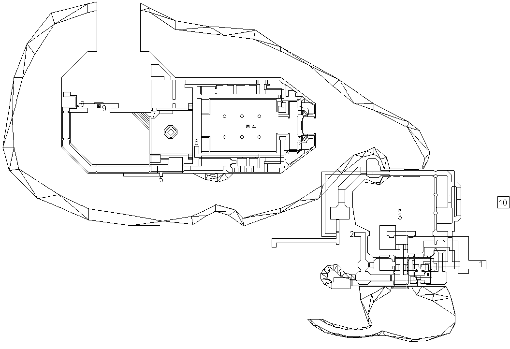

| 1. | Entrance |
| 2. | Hitting this switch will turn the cube at 3 red. |
| 3. | This is a large cube hanging in the room. You have to touch it to open up more passages. |
| 4. | This large cube will drop lame swords and teleport you around. |
| 5. | Go up the ramp. There is a secret door here. |
| 6. | hit this switch and return to #4 and touch the cube again, this will lower the shield at #7 |
| 7. | Invisible barrier, see #6 |
| 8. | Memory Crystal Delta |
| 9. | Read the plaque. Then tough the cube to be transported to 10. |
| 10. | You will find the Quest Item Book of Liches here. |
Terrible Eye: These are immune to fire attacks, Implosion seems to work vell however.
Flying Eye: These are immune to water, Inceinerate works well, as does Implosion.
The others seem to have no definate immunities so just use your strongest spell, It seems they are all weak against poisons though, so try Toxic Cloud or Acid Burst.
Once you enter, and touch the cube at 3, you can then hit the switch at 2. Touch the cube again, and the back of the dungeon opens. You can go to 4 and clear this room out, or go directly to 5 and start toward 6. There is no way from the room that 4 is in to get to 6, Now I know get the memory crystal, and read teh plaque. You will be warped to chamber 8, you'll find the book of Liches here, and some dead people. You may take things from them, but you will lose one full reputation level.
Leave us a message at: mgrounds@hotmail.com